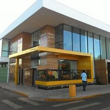

| PÁGINA INICAL | SOBRE NÓS | HISTÓRIA | NOSSO BAIRRO* | PRODUTOS | CLIENTES | FORNECEDORES | CONTATO |

A sede da empresa foi inaugurada em 2015, na localização Avenida Ragueb Chohfi, 1829, São Paulo, SP.
Nosso horário de funcionamento é das 07h às 21h.
Caso tenha alguma dúvida, nos contatar.